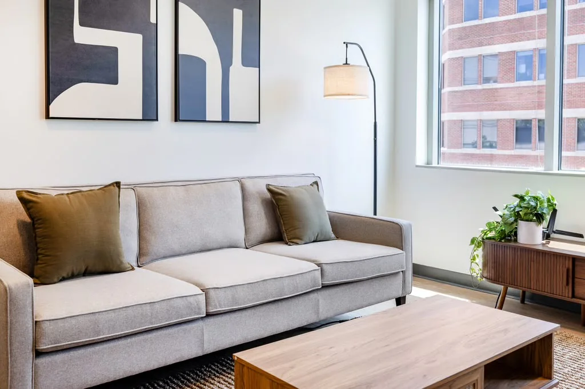

Start with a free 15-minute consultation.
Learn how therapy may support your goals and determine whether Forward Focus Counseling is the right fit for you.
Request a consultation
The easiest way to get started is to choose an available time for a free 15-minute consultation through the secure SimplePractice scheduling page.
Please keep email messages brief and avoid including sensitive clinical information.
Session information
In-person counseling: $205 per session
Virtual counseling: $205 per session
Payment: Private pay only. Forward Focus Counseling does not bill insurance directly. A superbill can be provided for you to submit to your insurance company for possible out-of-network reimbursement.
Coverage and reimbursement vary by plan. Contact your insurer directly to confirm out-of-network benefits.

In-person therapy in Old Town Alexandria
Forward Focus Counseling LLC
1737 King St., Suite 330
Alexandria, VA 22314
In-person appointments are available at the King Street office. Secure virtual counseling is also available throughout Virginia.